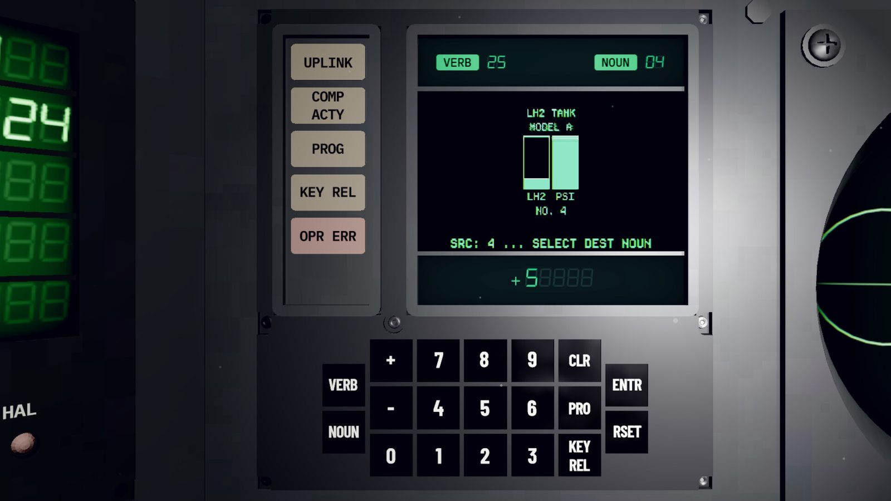
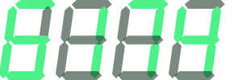
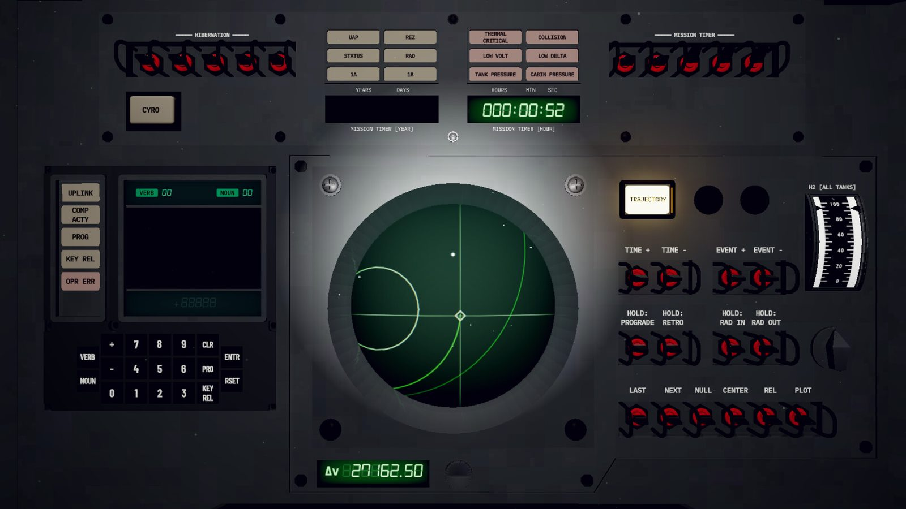
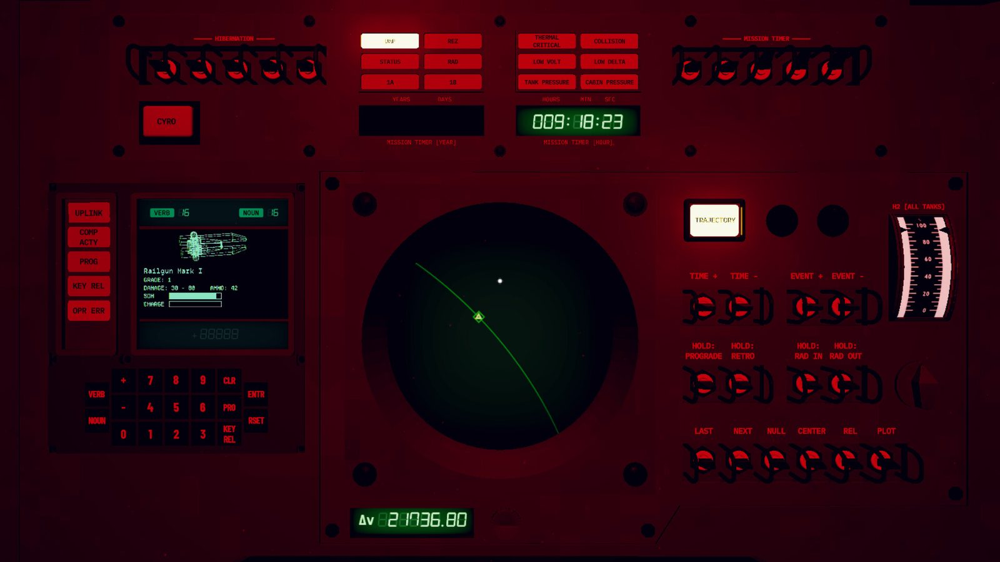
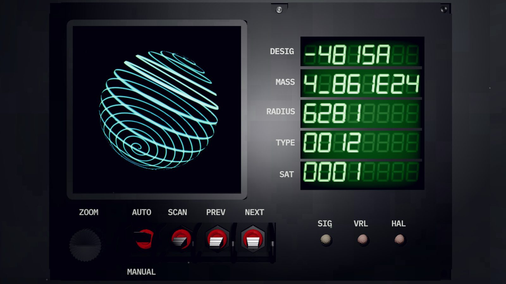
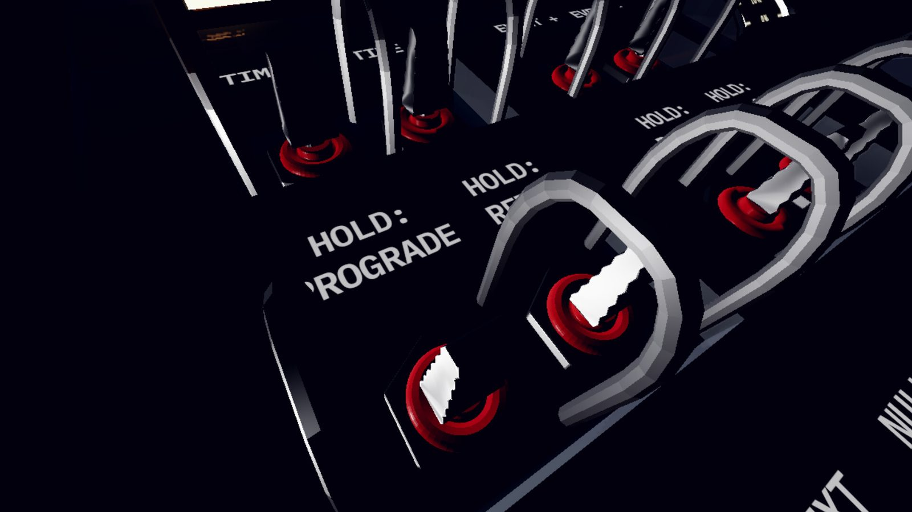
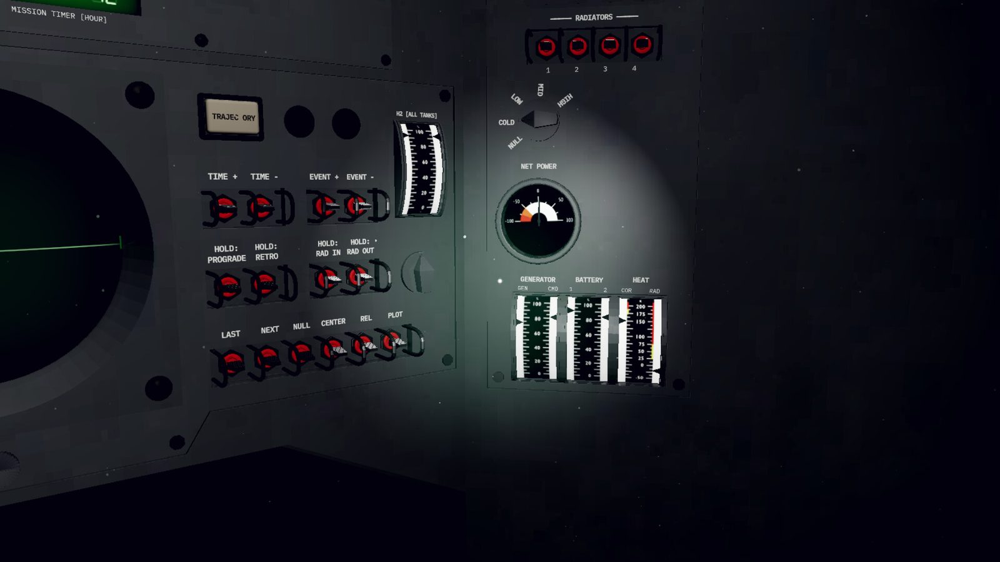

BACK TO ANALOG모든 조작은 손으로
δQ는 스스로 생각하는 기계라면 무엇이든 오염시킵니다. 똑똑한 장비일수록 먼저 당했고, 인류는 결국 투박한 옛 기술로 돌아갔습니다.
1970년대 아폴로 사령선을 닮은 조종석에서 토글 스위치를 올리고 내리고, 버튼을 누르며 계기와 경고등을 직접 확인해야 합니다. 컴퓨터 명령도 아폴로처럼 VERB와 NOUN에 각각 두 자리 숫자 코드를 입력해 실행합니다.

KOTGE ASTROWORKS PRESENTS

궤도 생존기ORBITAL SURVIVAL
1970년대 아날로그 조종석으로 무너진 우주를 건넙니다.
버튼 하나를 잘못 눌러도 돌아오지 못합니다.
COMING 2027 · WINDOWS / MACOS / LINUX
ENTRδQ는 스스로 생각하는 기계라면 무엇이든 오염시킵니다. 똑똑한 장비일수록 먼저 당했고, 인류는 결국 투박한 옛 기술로 돌아갔습니다.
1970년대 아폴로 사령선을 닮은 조종석에서 토글 스위치를 올리고 내리고, 버튼을 누르며 계기와 경고등을 직접 확인해야 합니다. 컴퓨터 명령도 아폴로처럼 VERB와 NOUN에 각각 두 자리 숫자 코드를 입력해 실행합니다.

목적지만 보고 엔진을 켜면 연료가 먼저 바닥나거나, 정거장을 지나쳐 우주를 떠돌게 됩니다. 궤도를 읽지 못하면 출발은 할 수 있어도 도착할 수 없습니다.
상대 궤도와 위상을 맞추고, 중력 도움을 받아 ΔV를 아끼며, 정거장과 만날 궤도를 계산해야 합니다.
행성 사이를 이동하는 데는 수십 일에서 수개월이 걸리고, 목적지에 따라 수백 년이 필요할 때도 있습니다. 동면으로 긴 시간을 건너뛸 수 있지만, 그동안에도 δQ의 추적은 멈추지 않습니다.

장비에 동력을 공급할수록 선내에 열이 쌓입니다. 라디에이터를 펼치면 식힐 수 있지만, 레이더에 잡히는 면적도 커져 δQ에게 들킬 가능성이 높아집니다.
δQ 기체가 요격하러 오면 라디에이터를 접고 숨을지, 레일건을 충전해 맞서 싸울지, 엔진을 켜고 피할지 결정해야 합니다.
항상 통하는 답은 없습니다. 남은 전력과 선체 온도, 적과의 거리까지 따져 그 순간 어떤 위험을 감수할지 결정해야 합니다.

인류는 한때 게이트웨이를 통해 은하를 오갔지만, δQ가 문명도 은하로 통하는 길도 무너뜨렸습니다. 남아 있는 단서는 옌도르 성계에서 날아온 신호뿐입니다.
게이트웨이를 통과할 때마다 처음 보는 성계가 나타납니다. 기이한 행성과 아노말리, 버려진 우주선이 나타나는 위치와 조합도 매번 달라집니다.
연료가 바닥나거나 위성에 추락하거나 아노말리에 휘말리는 순간, 항해는 끝납니다. 불러올 세이브도, 이어서 시작할 체크포인트도 없습니다.



옌도르에 닿을 기회는 단 한 번뿐입니다.
[ WISHLIST ON STEAM ]